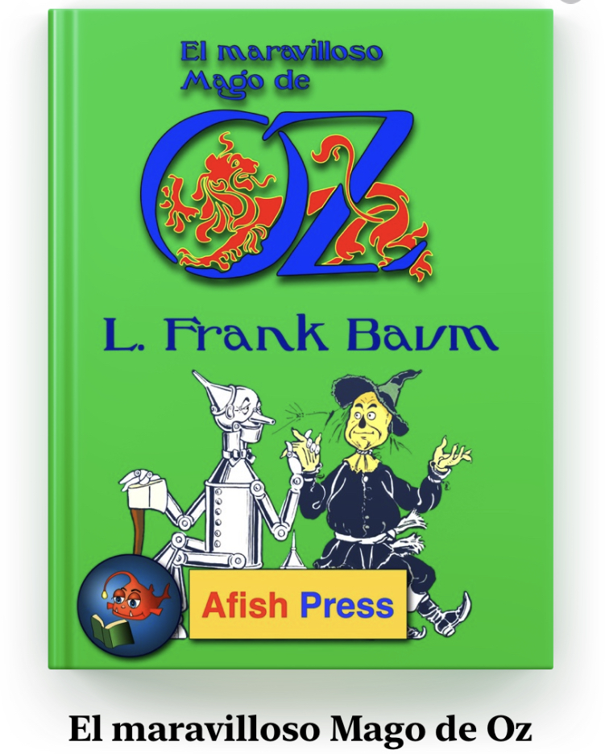

学习西班牙语的第二个月
2024年2月底，从成都经过旧金山转机✈️，我来到了墨西哥🇲🇽。原本计划花半年时间一路向南旅行🗺️，从墨西哥，危地马拉，秘鲁，直到阿根廷，但在墨西哥城停留一段时间后，说不出具体原因，但就是喜欢上了这座阳光明媚、绿树成荫、热情友好的城市。最终，旅行计划变成了4个月的西班牙语学习计划🗒️，我想要用4个月时间，把西班牙语从零学到可以自由地读小说和听播客的水平。
第三个月的学习重点：
- 词汇：这个月读了10本以上的西语故事书（别看数量多，一半都是50页左右的小册子），其中包含面向学习者的故事书（6本），面向母语者的儿童读物（3本），墨西哥小学教材（2本）；同时每天背诵阅读过程中记录的笔记。
- 听力：带字幕地观看 Youtube 学习视频，中途放弃了枯燥的学习视频，开始观看街头采访系列。
- 语法：在 UNAM 大学的外国人教育中心上课，周一到周五每天上课四个半小时，老师带领我们用练习题、对话、作文、听力来反复应用过去式变位、将来式变位、宾语代词、自复动词。
第三个月的学习中使用过的非常推荐的材料：
- Reddit 外语学习小组推荐的外语学习指南：回答了外语学习各个方面的问题，对于听说读写、如何突破初级中级高级瓶颈都有指导价值。
- Reddit 西语小组推荐书单：分为面向学习者和面向母语者两部分，每部分都按难度分级，随机读了4本，都非常喜欢。读了两本面向学习者的小册子，一本 Las tres pruebas（A2，66页），另一本 Elena（B2，31页，词汇不难，却讲了一个类似达芬奇密码的精彩故事）；读了两本面向初级母语者的小说，属于 La casa del árbol 系列，类似冒险小虎队，读起来轻松有趣，每本在50页左右。
- El maravilloso mago de Oz：经典童话《绿野仙踪》的西语译本，最早是在菲律宾学英语的时候英语老师 Via 推荐给我的，说是她最喜欢的英语故事，没想到最后我读了它的西语版；非常喜欢这个故事，虽然是童话，却蕴含了有趣的哲理。
- 每日西语听力 app：用它来精听 Charlas Hispanas 这个西语播客，有文稿，播放时可以定位到当前那一句，长按自动查询生词。
- Easy Spanish：YouTube 频道，内容为街头采访，可以接触到很多西语口音，包括拉美国家和西班牙口音，内置西英双语字幕，主要挑感兴趣的话题在泛听，推荐墨西哥系列，语速慢一点。
- 墨西哥小学教材：墨西哥小学生的教材，可以在 conaliteg digital 这个 app 上阅读；它的优点是题材丰富，配图精美，从防止蛀牙、地震了怎么办、墨西哥名画、墨西哥民俗、五线谱一直到小动物的故事，缺点是生词有点多、阅读难度大。
下个月的学习计划：
- 阅读故事积累词汇：阅读面向母语者的儿童读物，以及青少年读物
- 练习听力：精听 Charlas Hispanas，泛听 Easy Spanish
- 练习口语：参加学校每周三的茶话会，抓住说西语的机会
P.S. 外语学习理论
第一个月的理论部分，介绍了外语学习最重要的两点，一是要有足够的乐趣驱动，二是要有足够长的时间浸泡在语言里。第二个月，介绍了通过阅读来积累词汇的一些窍门。这个月分享复习笔记的方法。
前面两个月，我主要都是使用西语助手 app 来记录生词、复习生词。其中的问题是，生词含义记录得不够精确，不方便记录一些有关联的单词和词组，因此第三个月我回到了纸和笔的方式来记录阅读中的生词和词组，并采用艾宾浩斯遗忘曲线来复习笔记。我把这种方法叫做，艾宾浩斯笔记复习法。
- 把笔记本按页画上序号；
- 制作一个艾宾浩斯遗忘曲线的 excel 表格，学习完一个序号的内容，将序号填入 excel 表格的第一列，并填入学习日期，excel 表格会自动在同一行计算出1、3、7、15、30、90天后的日期，作为复习日期；
- 每天晚上睡前，复习 excel 表格中当天日期前的所有序号。
如果不想用 excel 表格，手机上也有很多相关软件，我使用的是 Anki。


文章作者 Harold Gao
上次更新 May 31, 2024